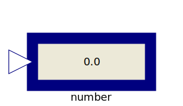

Library of blocks to show variables in a diagram animation
| Name | Description |
|---|---|
|  RealValue | Show Real value from numberPort or from number input field in diagram layer dynamically |
| Show Integer value from numberPort or from number input field in diagram layer dynamically | |
| Show Boolean value from numberPort or from number input field in diagram layer dynamically |